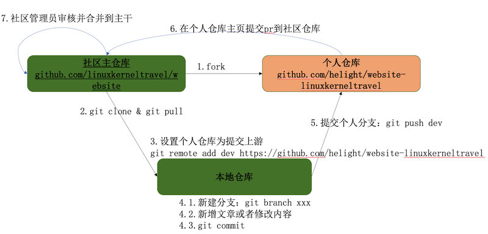

前言
Linux 内核之旅的网站我们重构了，这次使用了 github 管理，hugo 作为站点管理工具。目标是能够让更多的同学参与进来，学习，分享，共同建设，让大家更方便高效的走 Linux 内核之旅。
“Linux内核之旅”网站的大幅度改版，更是为热爱开源的Linuxer提供更广的舞台，大家的周报告，分享视频，相关代码，点点滴滴都将会通过Linux内核之旅网站，公众号，学堂在线，Github 以及B 站等平台全面的分享出来。Open，Free&Share，不仅仅是一个口号，落地生花之时，也是一个人从内而外的成长之际。 -- 陈莉君教授。
所以这里也欢迎大家参与分享，这篇文章主要介绍怎么参与投稿。
投稿内容
我们是《Linux 内核之旅》社区，所以一切投稿还是以 Linux 内核为主，另外在软件开发理论，开源代码分享，社区文化方面也可以投稿。
投稿方式
目前我们是 github 的仓库来做管理，所以投稿的方式也是在 github 的仓库中直接提交 pr。具体提交 pr 的流程如下： 
详细步骤说明
1.fork 我们的站点项目到自己的仓库
站点仓库： https://github.com/linuxkerneltravel/website
fork 项目过程相对比较简单，在 https://github.com/linuxkerneltravel/website 页面右上角点击 fork 按钮即可， fork 到自己的空间。
我的 fork 后是这样的地址，因为我的空间已经有一个 website 的仓库了，所以这里就加了一个后缀来区别。
https://github.com/helight/website-linuxkerneltravel
2.clone 主仓库到本地
https://github.com/linuxkerneltravel/website
helightxu$ git clone https://github.com/linuxkerneltravel/website
helightxu$ cd website
3.设置自己的仓库开发代码位提交上游关键
helightxu$ git remote add dev https://github.com/helight/website-linuxkerneltravel
4.新建分支，并且在新分支上修改提交代码
4.1 代码更新
在每次新建分支之前一定要执行 git pull，是的 master 分支保持最新。
helightxu$ git pull
helightxu$ git checkout -b pr_intro
Switched to a new branch 'pr_intro'
helightxu$
4.2 编辑开发
社区站点是使用 hugo 搭建管理，所以大家需要在本地搭建使用 hugo 来预览稿件效果。这里有个中文帮助站点大家可以学习。
这里以 hugo 新建一个博文为例进行介绍。首先使用下面的命令新建一个 markdown 文件。
helightxu$ hugo new blog/2020/submit_pr/index.md
/Users/helightxu/helight_doc/website-linuxkerneltravel/content/blog/2020/submit_pr/index.md created
helightxu$
然后进行博文撰写，撰写格式要求：
1. 必须按照 `/blog/20xx/英文文章名称/index.md` 的路径格式创建文章。英文文章名称使用英文字母、下划线、连字符和数字，其它字符不接受。
2. 要求的内容格式一定是 markdown 的，其它格式内容暂时不接受。
3. 使用的图片一律保存在和 markdown 文件同级目录下的 imgs 文件夹中，如：`/blog/2020/submit_pr/imgs/pr.png`。
4. 图片的名称也一律使用英文命名，规则和上面一致。图片宽度不要超过900的宽度。
5. 图片大小在500k以内。
4.3 编辑完成之后进行本地验证
这一步非常重要，一定要进行本地验证，避免文章有 markdown 语法、图片格式、文字错误等。所以一定要验证。
helightxu$ hugo server
| ZH
-------------------+------
Pages | 18
Paginator pages | 0
Non-page files | 5
Static files | 121
Processed images | 0
Aliases | 6
Sitemaps | 1
Cleaned | 0
Built in 132 ms
Watching for changes in /Users/helightxu/helight_doc/website/{archetypes,content,data,static,themes}
Watching for config changes in /Users/helightxu/helight_doc/website/config.toml
Environment: "development"
Serving pages from memory
Running in Fast Render Mode. For full rebuilds on change: hugo server --disableFastRender
Web Server is available at http://localhost:1313/ (bind address 127.0.0.1)
Press Ctrl+C to stop
看到上面信息就可以在本地浏览器中预览站点，看撰写的文字是否符合自己的预期。如果有问题可以修改后直接刷新看效果。
4.4 编辑本体验证没有问题之后做本地提交。
helightxu$ git add content/blog/2020/submit_pr
helightxu$ git commit -m "add new blog submit_pr" -a
[pr_intro 7607f03] add new blog submit_pr
2 files changed, 101 insertions(+)
create mode 100644 content/blog/2020/submit_pr/imgs/pr.png
create mode 100644 content/blog/2020/submit_pr/index.md
helightxu$
5.提交代码到 dev 上游仓库
这个 dev 上游就是上面设置的哈：git remote add dev https://github.com/helight/website-linuxkerneltravel
这种设置方式是可以把本地的修改按照 dev 标签提交到指定的另外一个仓库。我们一般是以主仓库作为我们工作目录，但是从主仓库的 master 分支创建出来的开发分支是不可以提交主仓库的，所以个人仓库就是这个分支提交的地方，提交之后在在个人仓库的分支和主仓库的 master 分支创建 pr。
helightxu$ git push dev
Enumerating objects: 13, done.
Counting objects: 100% (13/13), done.
Delta compression using up to 12 threads
Compressing objects: 100% (7/7), done.
Writing objects: 100% (9/9), 376.97 KiB | 19.84 MiB/s, done.
Total 9 (delta 2), reused 0 (delta 0)
remote: Resolving deltas: 100% (2/2), completed with 2 local objects.
remote:
remote: Create a pull request for 'pr_intro' on GitHub by visiting:
remote: https://github.com/helight/website-linuxkerneltravel/pull/new/pr_intro
remote:
To https://github.com/helight/website-linuxkerneltravel
* [new branch] pr_intro -> pr_intro
helightxu$
接下来就可以在这里查看代码了：https://github.com/helight/website-linuxkerneltravel。
这里 pr_intro 这个分支就是刚刚提交的。
6.创建pr
在自己的个人仓库 https://github.com/helight/website-linuxkerneltravel 上面可以直接看到创建 pr 的按钮，直接创建就好了。
创建 `pr` 之后，后面有修改直接提交到这个个人分支上就可以了，不用重复创建。
7.等待 reviewer 反馈和合并到主干
社区的管理员会对你提交的 pr 进行 review，review 后会提出修改点，或者 review 没有问题直接合到主干中。
另外如果提出问题，大家可以在这里讨论，并修改达成一致，并提交到这个分支上，最后再合到主干中。
总结
以上简单说了我们社区文章投稿的过程。希望大家多多参与共建《Linux 内核之旅》社区。
关注「黑光技术」，关注大数据+微服务